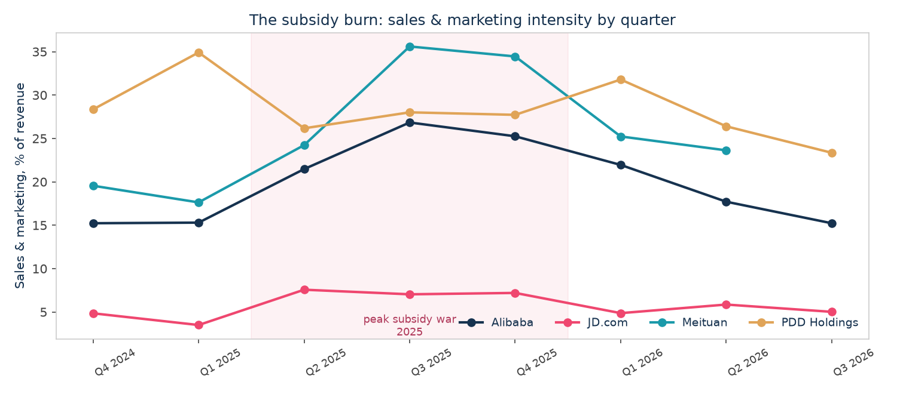
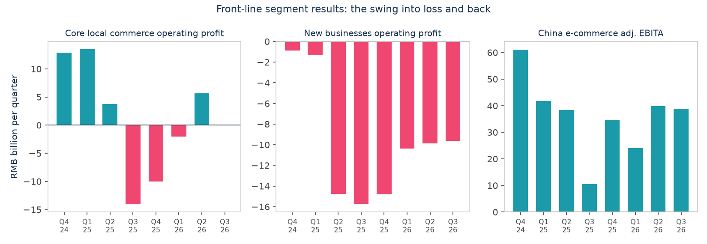
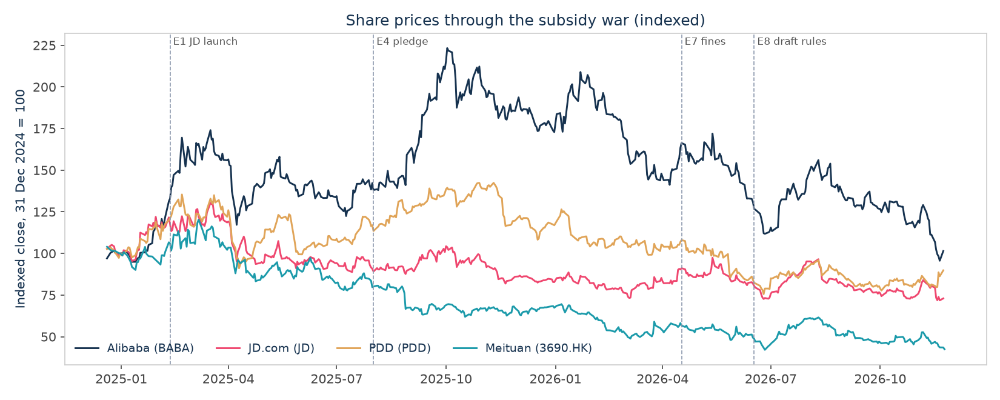
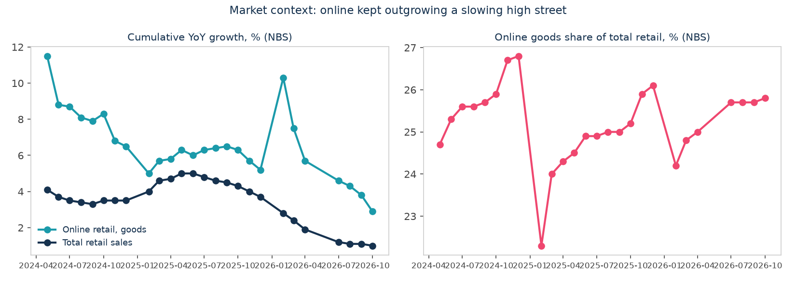

How the 2025 food-delivery subsidy war between JD.com, Meituan and Alibaba burned through platform profits, what the regulator (SAMR) did about it, and what the financial statements show through Q3 2026. All figures are transcribed from official earnings releases (SEC EDGAR 6-K exhibits; HKEXnews for Meituan), Yahoo Finance prices, and National Bureau of Statistics releases.



| Event | Date | BABA | JD | PDD | 3690.HK | |
|---|---|---|---|---|---|---|
| E1 | 2025-02-11 | JD.com launches food delivery (JD Takeaway) | +7.8 | -11.8 | +2.3 | -0.3 |
| E2 | 2025-05-13 | First SAMR summons of food-delivery platforms | -5.8 | -3.6 | +2.2 | -1.5 |
| E3 | 2025-07-18 | Second SAMR summons | -0.1 | +0.9 | +8.4 | +1.5 |
| E4 | 2025-08-01 | Platforms pledge to curb irrational subsidies | -2.0 | +0.6 | +0.4 | +0.9 |
| E5 | 2026-01-09 | Anti-monopoly committee opens food-delivery competition investigation | +6.6 | -1.1 | -12.6 | -1.8 |
| E6 | 2026-02-13 | SAMR summons seven platforms on involution-style competition | -2.9 | +1.2 | +7.2 | +1.0 |
| E7 | 2026-04-17 | SAMR fines seven platforms RMB 3.597bn | +3.1 | -0.3 | -2.4 | -4.2 |
| E8 | 2026-06-17 | SAMR draft food-delivery subsidy rules | -4.8 | -5.3 | -2.8 | -6.8 |
| E9 | 2026-09-20 | SAMR anti-involution enforcement push | -3.3 | -1.4 | +0.5 | +0.1 |
Market model vs KWEB (ADRs) or the Hang Seng TECH ETF (Meituan); market-adjusted returns for E1, where the estimation window is too short. Abnormal returns measure what the market repriced, not proof of regulatory causation.
| Company | Q4 2024 | Q1 2025 | Q2 2025 | Q3 2025 | Q4 2025 | Q1 2026 | Q2 2026 | Q3 2026 |
|---|---|---|---|---|---|---|---|---|
| Alibaba | 15.2 | 15.3 | 21.5 | 26.8 | 25.2 | 21.9 | 17.7 | 15.2 |
| JD.com | 4.8 | 3.5 | 7.6 | 7.0 | 7.2 | 4.9 | 5.9 | 5.0 |
| Meituan | 19.6 | 17.6 | 24.2 | 35.6 | 34.5 | 25.2 | 23.6 | - |
| PDD Holdings | 28.4 | 34.9 | 26.2 | 28.0 | 27.7 | 31.8 | 26.4 | 23.4 |
